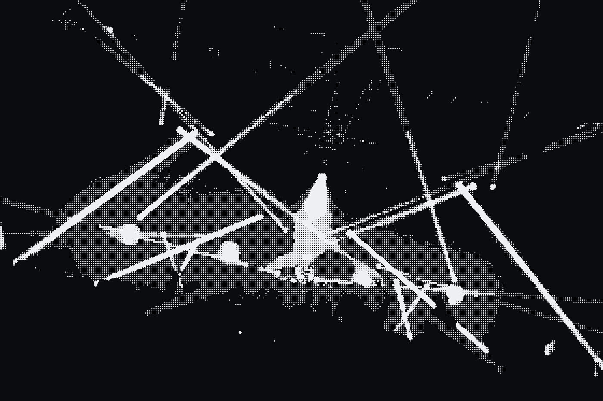
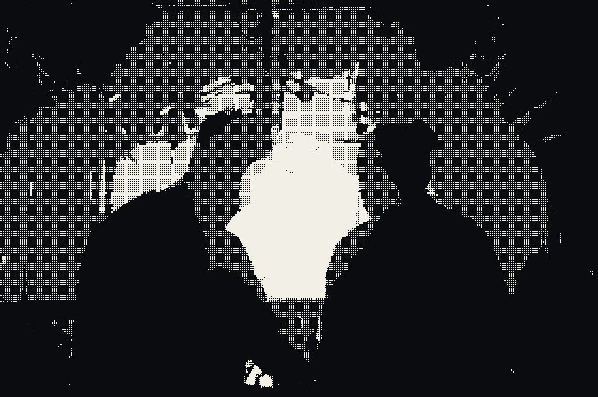
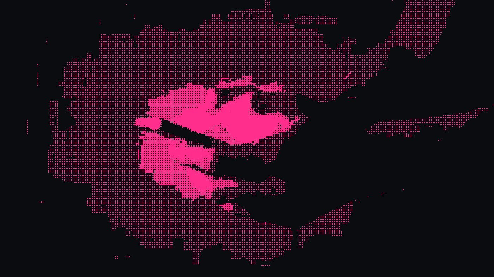
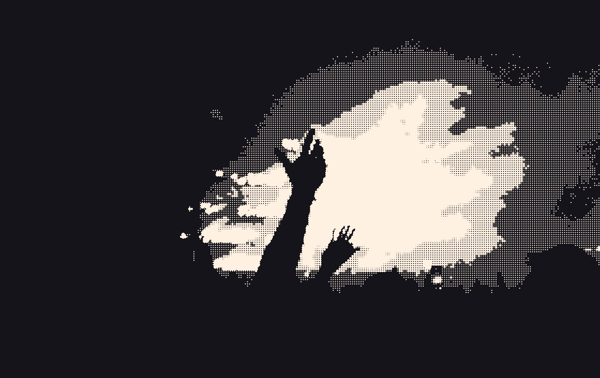

Eight voices, each with its own step sequencer.
Synths, Sampler, and effects built‑in
Any step.
Any voice.
Any instrument.
Any step can play any instrument.
Any voice can play any pattern.
Tracker-style flexibility, with a groovebox UI.
Flexible.
Every pattern has up to 128 steps.
Multitimbral.
8 voices, playing any instrument.
Processed.
Per-instrument and global FX chains.
Automated.
3 modulation layers, for any parameter.

Get straight to it
Laser-focused on making music, not learning workflows. Jolt is designed from the ground-up to be mobile-first, inspired by classic handheld devices.
Begin with a beat
Choose an instrument, and tap in a rhythm or select the steps you want to play.
When your idea needs more space or variation, extend a pattern up to 8 pages of 16 steps.
Sample what’s nearby
Record through the mic, or load a sample in from your library.
Jolt's Sampler features slicing and old-skool repitching, for crafting awesome breaks or remixing classic samples.
Play something melodic
JOLT's synths cover a wide set of styles, and are all designed for quickly testing out ideas.
Play notes in on the on-screen keyboard, or via MIDI, the load up the piano-roll to edit and tweak until you get the perfect line.
Let it generate
JOLT's generative modes cover simple arpeggios, pounding acid patterns, and a complex chord progression editor.
Everything is kept in-scale, so inspiration is as simple as picking a mode and going wild.

Specification
Don’t feel limited.
Jolt Groovebox / iOSSequencer
SEQEach voice plays independently
Any voice plays any instrument on any step. Multiple instruments mix into a single pattern.
Programmed · MIDI input · Generative.
Patterns chain into songs, with automation.
Live parameter control while the song runs.
Instruments & Effects
INS · FX4 modes — spread, 2-op FM, paraphony, in-scale chords.
Built on the architecture of the Eurorack classic, Mutable Instruments Plaits.
Old-skool repitching, per-step reversing, and granular cloud.
Hats, snares, heavy kicks, instantly configurable.
04 Filter: 4-stage ladder, or resonant SVF (LP / HP / BP), with mod envelope
10 Gater: 16-step, synced.
Modulation
MOD · SENDSine, ramp, and others. Assign to any parameter.
Matched to the song, or real-time fader override.
Tempo-synced, with ping-pong option.
Platform
SYSDesigned for mobile beat making

Demo
Ready to play?
The JOLT onboarding runs in the browser, as well as in the app, so you can try it right now:
Play the demo